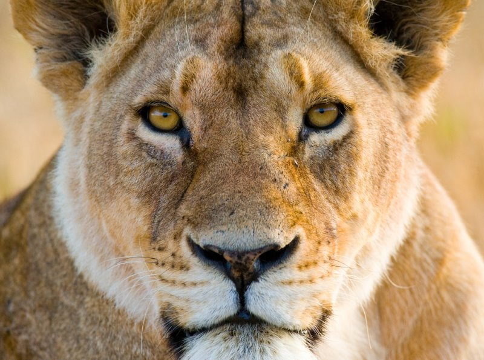

사자

사자는 대부분 무리지어 생활한다. 한 무리는 성숙한 젊은 수컷 1-3마리와 암컷 10마리, 늙은 암컷 5마리, 덜 성숙한 암컷 2마리,덜 성숙한 수컷 1마리, 한 살 이상의 새끼 1-2마리, 한 살 이하의 새끼 1-5마리로 이루어지는데, 이것을 프라이드(pride)라고 한다. 프라이드는 거의 일정한 행동권을 갖는데 보통 40-50km2 반경에서 이루어진다. 프라이드 가운데 가장 큰 프라이드를 슈퍼프라이드라고 부르는데 약 30마리로 구성된 것도 알려져 있다. 사자의 무리는 슈퍼프라이드 규모라 해도 완전히 성숙한 수사자는 오직 우두머리의 역할을 하는 1마리 뿐이다. 수사자는 하루에 20시간을 자거나 쉬면서 보낸다. 반면 암사자들은 하루종일 사냥한다. 큼직한 먹이로 포식을 했을 때는 꼼짝 않고 24시간 내내 쉰다. 그러나 배가 고프면 먹이를 찾아서 24km나 가기도 한다. 사자는 자신의 텃세권 안에서 낯선 사자가 사냥하지 못하게 한다. 수사자들은 덤불에 냄새가 나는 분비물을 배설하는데 3-4주 가며, 또 포효함으로써 영역을 알리고 침입자에게 나가라고 경고한다. 보통 포효는 8km까지 전달된다고 한다. 그러면 침입자는 이미 주인이 있는 영역임을 알게 된다. 그러나 경고를 무시하고 나가지 않으면, 침입자가 죽는 경우도 생긴다.
사냥은 낮에도 하지만 주로 밤에 하는데 낮보다는 먹잇감을 쉽게 기습할 수 있기 때문이다. 아프리카사자는 주로 검은꼬리누, 톰슨가젤과 그랜트가젤, 임팔라, 큰쿠두 등의 영양류와 얼룩말, 혹멧돼지, 레서쿠두, 리추에, 일런드, 검은영양, 니알라영양, 겜스복 등을 잡아먹고 아시아사자는 멧돼지, 아시아물소, 액시스사슴, 삼바사슴, 닐가이영양, 인도영양, 까마귀, 네뿔영양 그리고 가축을 잡아먹으며, 유럽사자는 살아있을때 멧돼지, 붉은사슴, 다마사슴, 유럽노루, 샤모아, 유럽들소 등을 잡아먹었었다.
시속은 보통 50km로 달리지만, 최고 속도는 80km에 이른다. 추적거리는 100~200m이다. 사자는 굶주린 상태와 배가 아주 부른 상태를 반복한다. 일 주일 동안 먹이를 잡지 못할 때도 있으나 대개 3-4일에 한 번씩 먹을 것을 잡아서 배가 부르도록 먹는다. 죽인 먹이를 그늘진 곳으로 끌고 가기도 하는데, 한 마리의 사자가 270kg이나 되는 얼룩말을 끌고 갈 수 있다. 무리가 모여 함께 먹이를 먹는데, 우두머리인 수사자의 몫은 항상 보증되어 있는 반면 나머지 구성원들은 자기의 몫을 차지하려고 서로 으르렁대거나 위협한다. 몸집이 큰 동물은 대체로 사자가 낼 수 있는 최고 속도인 시속 80km보다 빠르기 때문에 잡기가 어렵다. 그래서 사자는 먹잇감에 몰래 접근하여 기습해야 한다. 일단 사냥감을 고르면 그것을 가만히 살피다가 순식간에 덮친다. 땅에 납작 엎드려서 몸을 숨기고 천천히 먹잇감으로 다가간다. 약 15m 정도 거리에 이르렀을 때 앞으로 달려나가 엉덩이나 옆구리, 아니면 머리를 꽉 물고 땅에 쓰러뜨린다.